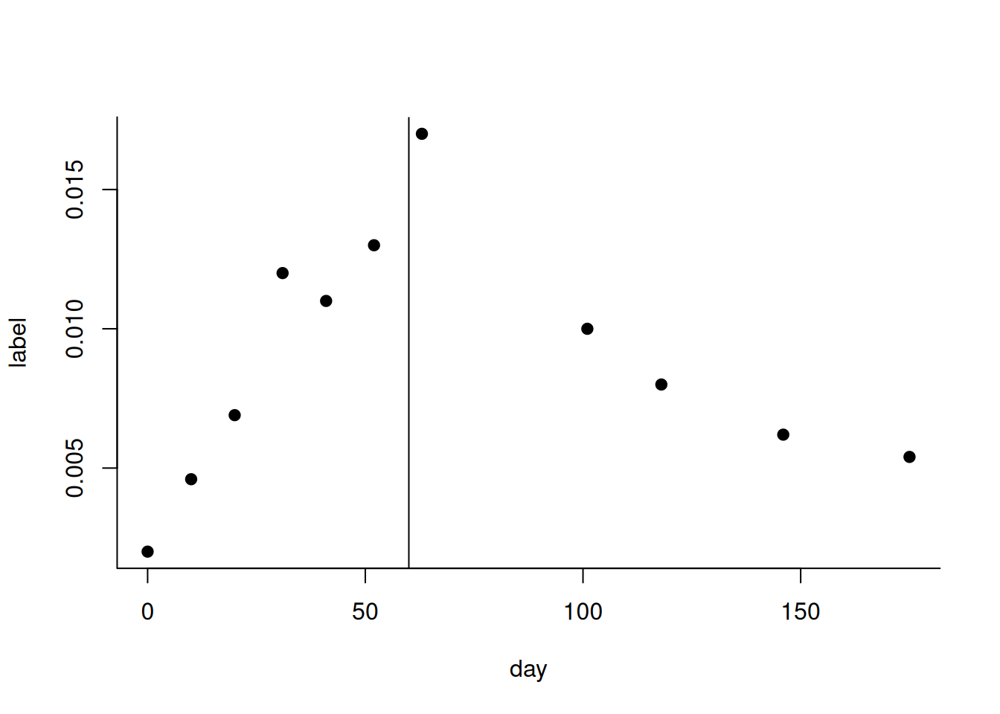
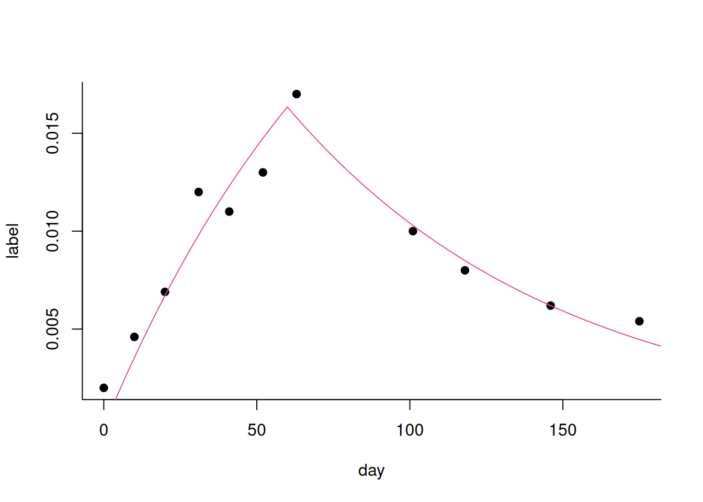
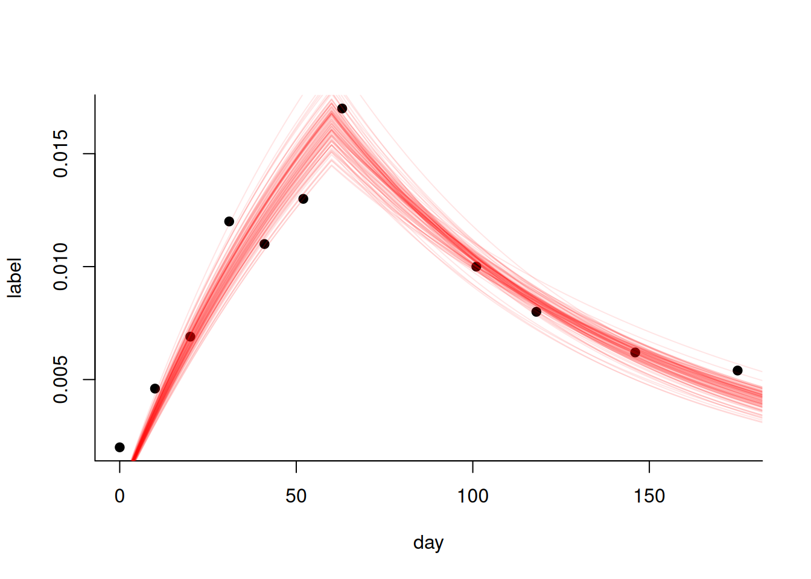
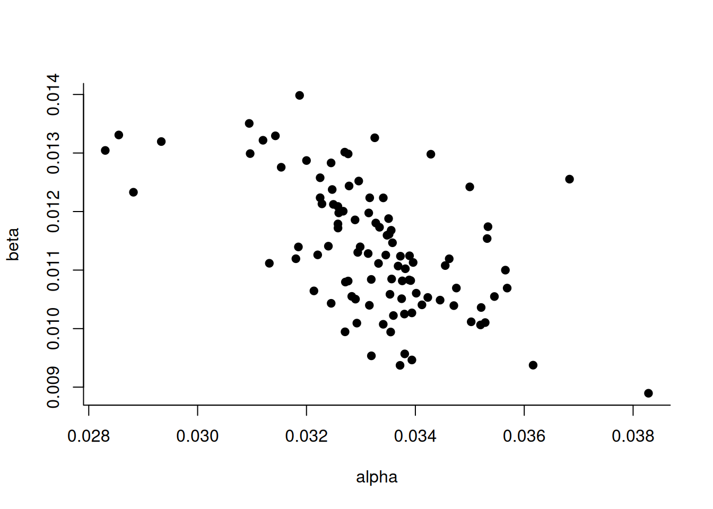
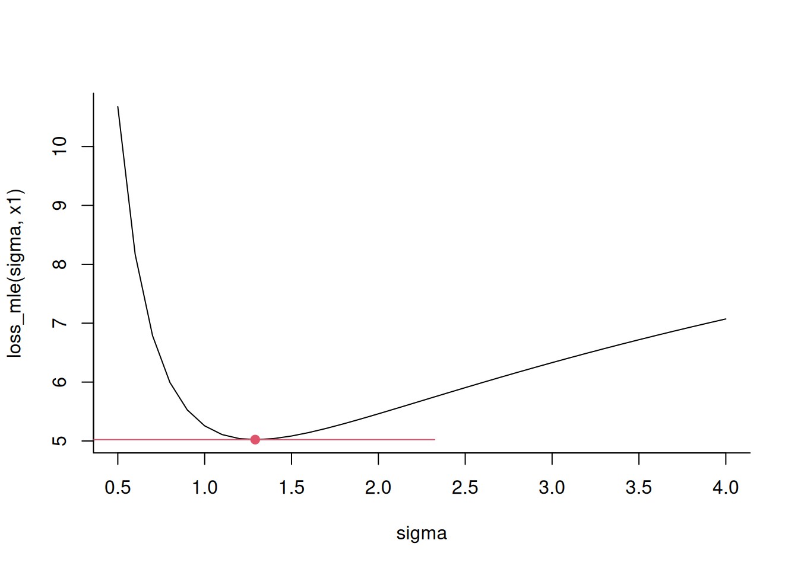
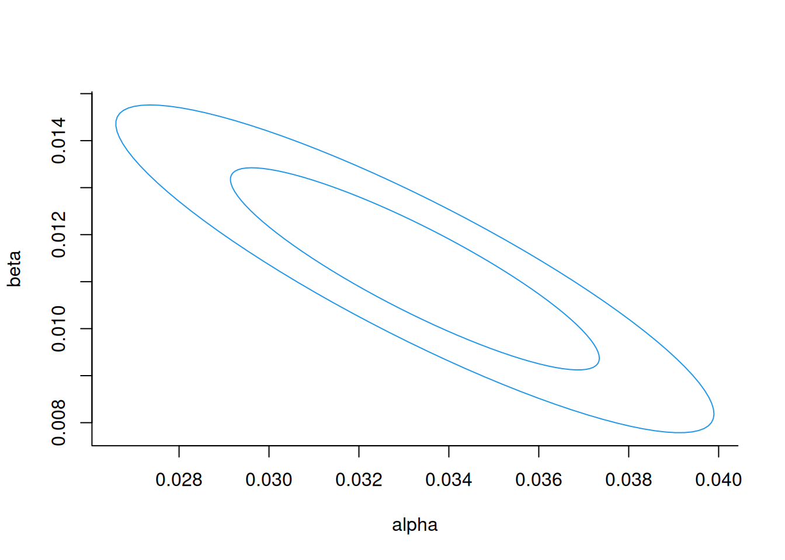
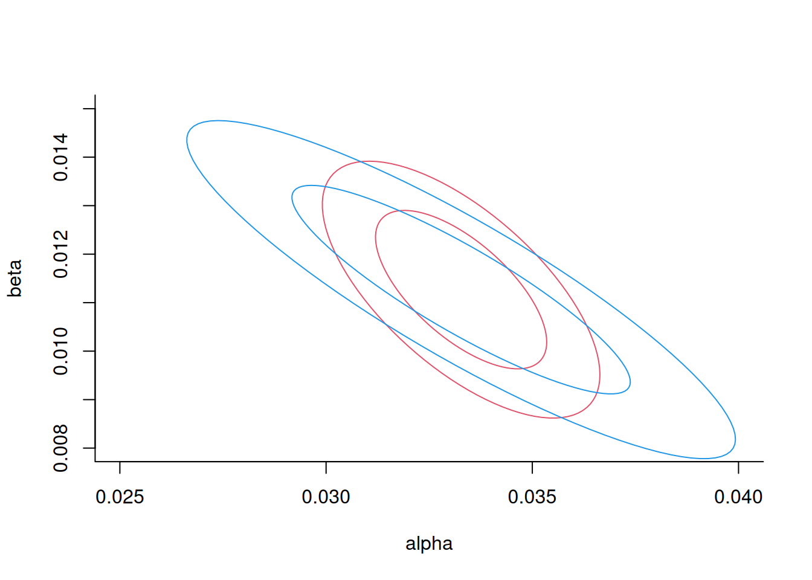

6 Model parameter estimation
6.1 Portfolio contributions
(Portfolio contributions by students are included in the transcript, but they will not be tested in the exams.)
6.1.1 The dummy variable trap
A student presented this website they discovered after personally encountering the “dummy variable trap” in their work on item 6: https://www.learndatasci.com/glossary/dummy-variable-trap/. This trap occurs when one “dummy-encodes” a categorical variable with \(n\) levels using \(n\) items (e.g., one encodes the Weekday by 7 variables IsMonday, IsTuesday and so on) and one forgets to remove one of the resulting binary variables. This causes multicollinearity, a situation where predictors have deterministic relationships with each other. This creates a mathematical problem where you’re essentially trying to fit more coefficients than the dimensionality of the problem allows, resulting in no unique minimum for the loss function. While deep learning models using stochastic gradient descent may not immediately show convergence issues, deterministic optimization algorithms, such as the ones we use to fit simple regression models, can fail to optimize the model with this trap. Many statistical software packages like R and scikit-learn automatically handle this by dropping one dummy variable (e.g., the first one or the one corresponding to the most data points) during encoding.
6.1.2 Ridge regression
Continuing on the topic of multicollinearity, another student showed this Medium article: https://medium.com/@msoczi/ridge-regression-step-by-step-introduction-with-example-0d22dddb7d54 which deals with this problem in a different way. The article explains that when you’re trying to fit a matrix in multivariate linear regression and your features are very strongly correlated, the matrix becomes close to singular (resembling the deterministic relationship above), which gives you unstable fits. To fix this, you can add a penalty term which forces the weights to stay small and prevents the coefficient matrix from becoming singular, so your fits will be more stable. Such regularization is widely used in machine learning, but also in more classical, high-dimensional statistics, particularly when you have more predictors than observations. For example, in bioinformatics you might have measurements of 20,000 gene expression levels but only have a small number of people in your dataset. Commonly used regularization terms are the \(L_1\) (squared) loss (Lasso), which forces some coefficients to zero and is useful for feature selection, and the \(L_2\) (absolute) loss (ridge regression).
6.2 Introduction
So far, we focused mainly on what statistical models are and how we can fit them.
We discussed two types of models:
- One was the probability model, where we model a conditional probability distribution and fit it using maximum likelihood (basically, using the negative log likelihood as a loss function)
- And the other one was the model directly based on a loss function, such as:
- Squared loss;
- Absolute loss;
- Huber loss.
With both of these types of models, we can do inference in the sense that we have a data set, we have a model that we fit to the data set, and then we have the values of the parameters. And then crucially, we want to actually interpret these parameters, right? That’s what I’ve been bugging you about with your regression results. I want you to be able to explain to me what these mean in the language of the research question or domain that you are in.
6.2.1 Today’s goal: quantifying uncertainty
From observing your portfolio items so far, I have noticed that some of you are not very familiar yet with the concept of model interpretation in statistics – i.e., using a statistical model for inference rather than prediction. I hope today’s topic will contribute towards solidifying this understanding further.
In inference, when we use a statistical model to provide a quantitative statement about something in the real world, it’s crucial that we qualify the statement we’re making. A common way to do this is to provide some measure of uncertainty: perhaps a standard error, a 95% confidence interval, or even a p-value from a null hypothesis test (though we won’t be doing that in this class).
So what we’ll do today is: we’ll discuss techniques we can use to quantify the uncertainty of our inferences using confidence intervals. We’ll illustrate these techniques using two main examples.
6.3 Running example 1: estimating the standard deviation
My first example is an artificial toy example, which I just chose because it’s a one-dimensional model that’s easy to visualize and explain. We’ll later have a real example with actual data and a somewhat more interesting model.
In this toy example, we’re given a few numbers – let’s say \(x_1=-2, x_2=0, x_3=1\). We’re making the assumption that these are coming from a normal distribution with a mean of zero. Our inference target is: we want to estimate the standard deviation of this distribution.
Let’s write down a probability model corresponding to this inference problem:
\[ P_\sigma( x ) = {\cal N}(x, 0, \sigma) = \frac{1}{\sqrt{2\pi\sigma^2}} \exp\left( - \frac{x^2}{2\sigma^2} \right) \]
Here the variance, \(\sigma^2\), is our only unknown parameter.
We’ll now convert the probability density to a loss function in the usual way: by taking the logarithm and negating the result. That allows us to solve the problem using off-the-shelf optimizers built for minimization:
\[ L( x, \sigma ) = - \log( P_\sigma(x_i) ) = \frac{1}{2} \log 2\pi\sigma^2 + \frac{x^2}{2 \sigma^2} \\ \]
We saw something very similar last week, when we looked at the connection between the log-likelihood corresponding to a normal distribution and the squared loss. We can now proceed to minimize our loss function.
This is simply the logarithm of this thing, and then negate it, okay? So by doing… So we have now transformed our problem from a probability model to a loss function, which we also saw last week. It’s possible in many cases. It’s squared loss. The loss corresponds to some normal probability model. We can see that again here, because we have something like a squared deviation from zero up here. And now we can fit our model by minimizing this loss function, okay? So a simple example.
The above formula just refers to the log probability of a single point. Don’t we usually have the product of all probabilities?
If we compute the (maximum likelihood) loss over a whole dataset, then we indeed take the product of all likelihoods. But since we’re normally working with log-likelihoods, this product is transformed to a sum. To be more specific, the loss for the whole dataset is usually defined as the sum of the negative log-likelihoods, which in this example would be
\[ \sum_i L( x_i, \sigma ) = \sum_i - \log( \mathcal{N}(x_i, 0, \sigma) ) = \sum_i \frac{1}{2} \log 2\pi\sigma^2 + \frac{x_i^2}{2 \sigma^2} \\ \]
Here’s the code to fit both models:
x1 <- c(-2,0,1); x2 <- c(-2,0,0,1)
loss_mle <- Vectorize(function(sigma, x){
sum( -dnorm( x, 0, sigma, log=TRUE ) )
}, "sigma")
fit1 <- nlm( function(sigma) loss_mle(sigma,x1), 1 )
fit2 <- nlm( function(sigma) loss_mle(sigma,x2), 1 )Here, I didn’t bother to write down the formula for the likelihood. I instead just used the dnorm function from R, which conveniently has an argument log that directly outputs the log-likelihood. It’s usually implemented under the hood using a separate algorithm that is directly optimized for this use case, rather than first computing the untransformed value and then taking the log. The optimization is done as usual using nlm.
6.4 Running example 2: estimating the lifetime of white blood cells
This previous example where we estimated \(\sigma\) was a toy example. It isn’t very common—having a model of a normal distribution where you know the mean. I don’t think I’ve ever been in that situation myself.
So now let’s look at a real example. This is an inference problem from my field of research. We’ll use data from this paper: https://www.pnas.org/doi/full/10.1073/pnas.0709713105 but we’ll fit a simpler model than the authors did. The model we’ll fit is explained in this paper: https://journals.plos.org/ploscompbiol/article?id=10.1371/journal.pcbi.1000666
In this example, we have a simple and clear research question: how long do your white blood cells live? White blood cells come from your bone marrow and are in the blood, but they can also die and then they get replaced by new white blood cells. So the question is: how long do these cells live?
(To be more specific, we’re talking about CD4+ memory T cells—one type of white blood cell. There are in fact many different types of white blood cells, and they all in fact have different lifespans. But let’s ignore these complexities here.)
It isn’t easy to measure the lifespan of a cell in your body. We can’t, say, put a nanobot on a white blood cell and follow it until it dies. Until that’s possible, researchers need to come up with some clever indirect way of doing this estimation.
Cell lifespans are typically estimated by the following kind of experiment. You get something to drink—a label. That label gets incorporated into cells when they divide, and then after a cell has divided, you can measure the presence of the label in that cell. You would participate in something like that for a period of, say, one month or two months, regularly drinking this label. Then they take blood samples regularly and measure how many of your cells in those blood samples are labeled.
There are different types of labels. Of course, you should use labels that aren’t harmful—they shouldn’t damage your cells. One frequently used label is heavy water. That’s a form of water where the hydrogen atoms are replaced by deuterium atoms – a hydrogen with an extra neutron. Heavy water is written as \(D_2O\).
Small amounts of heavy water are safe to drink, and the participants in these studies drank safe amounts of heavy water over prolonged periods of time (please don’t try this at home though!). When a cell divides in a context where heavy water is present, the DNA of the daughter cells will incorporate the heavy water. This label can then be detected on white blood cells, for example from a blood sample.
Over the time course of such an experiment, more and more of the cells circulating in your blood will have this label. Those will be the cells that have divided since the experiment started. At some point, let’s say after 60 days, you will stop drinking the label. And then you will see the amount of labelled cells in your blood go down, reflecting the natural death of cells.
This leads to what we call a biphasic time series. Here we have some of the data:
day <- c(0, 10, 20, 31, 41, 52, 63, 101, 118, 146, 175)
label <- c(0.2, 0.46, 0.69, 1.2, 1.1, 1.3, 1.7, 1, 0.8, 0.62, 0.54)/100
n <- 11
plot( day, label, pch=19, type="p" ); abline( v=60 )
In this data, we can clearly see the initial uplabelling phase until 60 days, when the participant stopped drinking the label. Afterwards, we can see the downlabelling phase. Now, in order to translate such data into estimates of cell lifespans, we’ll make a critical assumption: Cells divide at approximately the same rate at which they die. The justification for this assumption is that otherwise, the number of white blood cells would decrease or increase over time, which we do not expect to happen in a healthy person.
Our assumption links the two phases; the increase during the uplabelling phase is mainly due to cell division, whereas the decrease during the downlabelling phase is mainly due to cell death.
Now it’s our turn as data scientists; can we make a statistical model and fit this to the data to infer the death/proliferation rate of the cells?
Does the label also go up because the participant drinks heavy water constantly?
The amounts of the heavy water in the body indeed do go up as well, but that’s not what we measure here – here we see the amount of labelled white blood cells. If your cells would not divide, this number would stay at 0 even if you were to drink lots of heavy water. This dependence on cell division is mainly why it takes so long for this number to go up.
I like this example because it’s a really creative and clever inference setup. We’re fitting a statistical model to answer a question that’s really hard to answer directly.
Now let’s think about which model we can build and fit. Clearly, a linear regression model isn’t going to do much. So we need to model and understand the process and then come up with a model that we need to fit.
There have, in fact, been many different models proposed for this kind of data (if you really want to know, here’s a review: https://www.cell.com/trends/immunology/fulltext/S1471-4906(02)02337-2). Here I’ll just use the simplest one I could find.
Our model assumes that in the first phase, our cells are picking up this label at a fixed and unknown rate until they reach some kind of saturation point. There are no more cells dividing, and there are no more picking up the label. And then we take the label away.
\[ Y(t) = \begin{cases} \alpha( 1 - \exp( - \beta t )) & t < T \\ \alpha( 1 - \exp( - \beta T ))(\exp(-\beta(t-T))) & t \geq T \\ \end{cases} \]
So in the first phase, the first case on the top, it is basically a saturating function that eventually saturates at level \(\alpha\), which is the maximum amount of cells that can take up the label. At time \(T\), the increase stops at level \(\alpha(1-exp(-\beta T))\) (note that this can be smaller but never larger than \(\alpha\)). This level then basically becomes the starting level for a standard exponential decay that starts at \(T\). (Note that this model ignores the fact that cells probably also die during the first phase; we’ll see later if we can improve on that.)
Our model has three parameters: \(\alpha, \beta, T\). But \(T\) isn’t something we fit – it’s directly determined by the experimental design. For example if participants drink heavy water for 60 days, then \(T=60\). The other two parameters \(\alpha\) and \(\beta\) are my inference targets that I want to determine from data and interpret.
Our research question is: How long do cells live? And in the model above, this translates to the question: what is the rate \(\beta\)?
So this model, again, can be derived from a differential equation, but I won’t show that explicitly here – the papers linked above show that for those who are interested. But in short, the differential equation is simply an exponential decay of non-labeled cells in the up labeling phase, and then an exponential decay of labeled cells in the down labeling.
6.4.1 Fitting the labelling model
Now let’s turn our mathematical equation model into a conditional probability model. We can do that in two ways:
- By adding an error term that we assume has some kind of distribution;
- Or by defining a loss function
Let’s choose the first approach, and assume that our conditional distribution of the label \(P(Y \mid t)\) given the time follows a normal distribution around a mean level that is given by the equation model defined above:
\[ P( y \mid t ) = \mathcal{N}( Y(t), \sigma ) \]
Now we have a probability model, which has a likelihood function, so we can fit this using maximum likelihood.
Let’s now implement this in code. Let’s start by defining the data itself:
day <- c(0, 10, 20, 31, 41, 52, 63, 101, 118, 146, 175)
label <- c(.2,.46,.69, 1.2, 1.1, 1.3, 1.7, 1,.8, .62, .54)/100
n <- 11Now comes the model, which is
simply the equation that I just showed. I have implemented this in a parallelized manner, so I can put entire vectors of x in at the same time, but it’s otherwise identical to the equation shown above.
model <- function(x, th=c(.015,.05), T=60 ){
th[1]*(1-exp(-th[2]*pmin(x,T)))*
exp(-th[2]*(pmax(x,T)-T))
}Now we implement the loss function. This is again a negative log likelihood, and again we’re using the dnorm function to compute that likelihood for us.
# Negative log-likelihood for use as loss
loss_nll <- function( x, y, th ){
resid <- y-model( x, th ); sigma <- sd( resid )
sum( - dnorm( resid, 0, sigma, log=TRUE ) )
}This function takes the model predictions obtained by the coefficients in theta and the vector x, and computes the residuals. We then compute the standard deviation of the residuals, and use that to compute the likelihood. This approach to implementing a maximum likelihood based fit is the same for any mathematical model you could come up with.
Why don’t we estimate the \(\sigma\) from data like in the other example?
Great question, we could actually do that by adding another argument to the loss function, and then letting the optimizer find the value for \(\sigma\) for us.
But, given what we saw last week, we typically don’t do that because we know that for any given parameter vector, the best value for \(\sigma\) is the standard deviation for the residuals (if the mean of the residuals is actually 0).
why do we use this loss function (which is derived from assuming a normally distributed error) as opposed to a different one?
Another great question! There’s not really a very good reason for this, other than the usual argument “many things are normally distributed”. But we could very well just use another distribution! However, note that this choice is equivalent to the least squares fit, which researchers in a setting like this would be very likely to use “by default”.
Now we have set up the problem in the usual way. We can fit our model to the data and we can get parameter estimates:
# Fit model to data and plot the fit
loss_nll_bound <- function( th ) loss_nll( day, label, th )
ls_fit <- nlm( loss_nll_bound, c(.03, .01) )
plot( day, label, type="p" )
x <- seq(0,200); lines( x, model( x, ls_fit$estimate ), col=2 )
## [1] 0.03324437 0.01127293So this is our best fit. It looks pretty decent! We can clearly see the uplabelling and downlabeling phases. We can also clearly see that it has not yet reached the saturation point \(\alpha\) when the labeling stops. According to the model, the label should still have increased if I had kept on labeling for longer.
For us, the more interesting value is the second one (corresponding to \(\beta\) in our equation) of 0.01, because that is the rate at which cells are dividing/dying in the population. This means that every day approximately one point one percent of the cells die and get replaced.
That answers our research question! Let’s just convert the turnover rate to a lifetime by taking the reciprocal to obtain a clearer interpretation:
- Cells turn over at a rate of 0.011 per day
- In other words, the lifetime of a white blood cell is about 89 days
6.5 Bootstrapping
(Note: if you prefer a more gentle introduction to Bootstrapping: I have put the lecture notes of the course “Data Analysis” on Brightspace, which contains a whole chapter with exercises on this topic.)
Now this number of 89 days sounds very precise, but what we set out to do today was to answer: how certain are we that it isn’t in fact 87 or maybe 70? Especially given the fact that our fit is only based on 11 data points, we may need to be a bit more humble.
Which techniques to quantify uncertainty do you know?
we could bootstrap the data to then re-estimate alpha and beta every time and then compute the confidence intervals
Yes! And what exactly is bootstrapping?
Sampling with replacement.
Yes!
A very simple version of bootstrapping is called jackknifing. Here you remove each individual sample from your dataset and re-fit the model, so you end up with exactly \(n\) different estimates. You can then use these different estimates to generate a confidence interval.
Bootstrapping is a more general version of this procedure: instead of removing samples one-by-one from your datasets (and putting them back), your re-sample with replacement from your dataset to get a new dataset of the same size. This new dataset often won’t contain all of the initial samples, but may contain some items twice or more. These “bootstrap samples” are then used to re-estimate the model on, collect the coefficients, and create something like a confidence interval from those estimates. Unlike with the jackknife, there’s no “standard” number of times that one generally does this, but it’s often done a couple of hundred or a couple of thousand times, for example.
(One can make a theoretical argument that the jackknife is in some sense a linear approximation of the bootstrap).
The bootstrap (and its cousin, the jackknife) are maybe the most versatile approaches to uncertainty quantification. They work for pretty much any statistical procedure that starts from a data set you can bootstrap. However, a disadvantage is that these resampling techniques can be computationally expensive, as I may have to fit 1000s of models.
(The word bootstrapping comes from pulling yourself out by the bootstraps, like this, exactly. Because it seems like something that shouldn’t work, but yet somehow does – It seems almost too simple to be real.)
Today, we’re going to complement bootstrapping with two simpler asymptotic techniques that rely on the idea of the loss curvature that I showed earlier. Here’s a quick overview of the three techniques compared:
- Bootstrapping, a very versatile technique that works with almost any statistical model, is computationally quite expensive. It’s a very well known method.
- The Wald test works with maximum likelihood estimation. It makes strong assumptions (the model must be correctly specified), but is computationally cheap. It’s also a very well known method. It’s probably what your favourite regression software does when you ask for confidence intervals for the coefficients.
- The Sandwich estimator works with most loss functions (including negative log likelihood). It’s computationally more expensive than the Wald test but often cheaper than Bootstrapping. It is implemented in some packages, but not even nearly as well known as the Wald test. (I think it deserves to be better known!)
6.5.1 Implementing bootstrapping
Let’s now go through how we could implement bootstrapping. We’ll use the same example as before, but now let’s fit the model using the squared loss, instead of the slightly more complicated but equivalent normal log-likelihood. We get the same results anyway, and with Bootstrapping we won’t need to use the likelihood function.
Let’s now go through code to see how this works. First, we set up the data, the model, and the loss function as usual.
set.seed( 12 )
day <- c(0, 10, 20, 31, 41, 52, 63, 101, 118, 146, 175)
label <- c(0.2, 0.46, 0.69, 1.2, 1.1, 1.3, 1.7, 1, 0.8, 0.62, 0.54)/100
n <- 11
## Least-squares formulation of the model for optim
model <- function(x, th=c(.015,.05), T=60 ){
th[1]*(1-exp(-th[2]*pmin(x,T)))*exp(-th[2]*(pmax(x,T)-T))
}
loss <- function( x, y, th ) mean( (y-model(x,th))^2 )
loss_bound <- function( x, y ){ function( th ) loss( x, y, th ) }
ls_fit <- function( x, y ) nlm( loss_bound( x, y ), c(.03, .01) )$estimate This is not at all different from what we did before. Now, let’s look at the code to do the actual bootstrapping. We implement a separate function to do a single bootstrap replicate:
## In each bootstrap iteration,
ls_fit_bs <- function(){
## We compute a sub-sample of the data ...
i <- sample(n, replace=TRUE);
## ... refit the model to that sub-sample ...
f <- ls_fit( day[i], label[i] )
## ... draw the fitted model as a line on top
## of the data so we get an idea of the variability ..
lines( 1:200, model(1:200, f), col=rgb(1,0,0,.1) )
## .. and return the fitted values for this sub-sample
f
}Perhaps the most important function in here is sample, which we use here to compute a random sub-sample with replacement. To understand this better, let’s look at what a single call to sample does:
## [1] 1 5 1 9 10 4 2 10 1 8We get a vector where all numbers are from 1 to 10, but not all occur (e.g. 3 is missing), and some are repeated (e.g. 10 occurs twice).
Now, let’s actually do the bootstrap, and plot the results.
## Plot the data
plot( day, label )
## Perform the bootstrap by calling the
## function above 100 times
bs <- t(replicate(100,ls_fit_bs())) 
Notice how we get a slightly different model fit each time we do this. Each of these red lines corresponds to a different pair of \(\alpha, \beta\) values. Let’s now look at those values directly:
## Make another plot of the bootstrapped parameter
## estimates
plot( bs, pch=19, xlab="alpha", ylab="beta")
What we can see is that there’s in fact a correlation between the two estimated parameters: if the setpoint estimate \(\alpha\) is on the higher end, then this will be compensated by a lower turnover rate, and vice versa. This kind of interdependence between estimated parameters is something that’s found in most models.
As a last step, we use the collected bootstrap information to get a 95% confidence interval for the parameter we are interested in.
## Determine a 95% confidence interval of cell lifetimes
## (=reciprocal of the 2nd parameter)
quantile( 1/bs[,2], prob=c(0.025,0.975) )## 2.5% 97.5%
## 75.17893 106.18590I’m using the reciprocal here because I want to ultimately report cell lifetimes, not cell turnover rates. So, my final interpretation of this result would be:
- A cell lives about 89 days (bootstrapped 95% confidence interval: 75 to 106).
The estimate of 89 days here is just taken from the previous fit, and now I added the bootstrapped confidence interval.
This is what we wanted – a more qualified version of our initial claim that cells live 89 days. In fact, based on this data, we’re not really equipped to say if it’s 89, 80, or 100.
Could you take essentially the median of the bootstrapped values and use that as the estimate?
One could! The reason that’s not usually done is that for our main estimate, we’d like to use all the data, whereas every bootstrap replicate is only based on a part of the data. But, we’d like these two numbers to be somewhat similar. If they’re not, it may mean that our initial estimate was in fact somehow biased (e.g. influenced by a few extreme outliers).
Although the code to implement the bootstrap itself is perhaps a little longer than we’re used to (but still very short), it would be very easy to now adapt this to a different statistical model. All I would need to do is change the model function. This illustrates how versatile the bootstrap is. There are some examples of statistics that you can’t bootstrap, and perhaps the most important one is entropy (as you lose samples in each replicate, the entropy of the replicates is almost always lower than the entropy of the sample itself). But there aren’t many such examples.
6.5.2 Prelude: Bootstrapping and model selection
Next week, we’ll talk about how we can use bootstrapping for model selection. I already want to give a bit of a hint now: suppose for example we do bootstrapping on something like an interaction term in a regression model. If our bootstrapped confidence interval includes both positive and negative values, this means we can’t really tell if it’s zero or not, which perhaps means we may just as well omit it – and that would mean we’d prefer a simpler version of the model. So we’ve now done model selection by doing bootstrapping on one parameter. More on that next week!
(Break)
6.6 The Wald test
We’re now going to look at a more mathematically based method for uncertainty quantification: the Wald test. This test is related to the intuition we showed in the beginning about the relationship between curvature of the loss function and confidence in our estimate.
The Wald test works for any conditional probability model that is fitted using the maximum likelihood method (or in most cases, the negative log likelihood). This includes many of the models we’ve seen: linear regression, logistic regression, the Cox model for time-to-event data, and the example models we’ve introduced today.
The only thing you need to do a Wald test is the second derivative of the loss. In the case of a multidimensional loss function (most interesting models are in fact multidimensional) the second derivative is called the Hessian matrix \(H\), and it contains all partial second derivatives. The inverse of the Hessian matrix of a negative log likelihood, evaluated at its optimum \(\hat{\theta}\), is called the Fisher information matrix.
If a probabilistic model is correctly specified (i.e., the data is actually generated in the exact way that the model assumes), then the sampling distribution of the parameter vector \(\theta\) is multivariate normal with mean \(\hat{\theta}\) and covariance matrix \(H^{-1}\):
\[ \theta \sim \mathcal{N}(\hat{\theta},H^{-1}) \]
The matrix \(H^{-1}\) is then also called the variance-covariance matrix of the estimated parameters. As the sampling size goes to infinity, the estimated \(H^{-1}\) based on the sample converges to the actual variance-covariance matrix of the sampling distribution.
The assumption that our model is correctly specified appears a fairly strong one, but note that you’re in some sense making the same assumption when you’re doing inference based on the model – if the model isn’t correct, it’s questionable if the estimated parameters really have the meaning they think they have.
The reason that the Wald test is often very easy to do (basically for free) is that many optimization algorithms already compute an estimate of the Hessian for the optimization method. For example, the version of Newton’s algorithm implemented in our favourite function nlm internally computes the Hessian. So chances are, you already have the matrix \(H\) available anyway once you numerically optimized the likelihood function.
6.6.1 Toy example
Let’s look at how this works out for our toy example. In our toy example, we can actually analytically compute the Hessian, which in this case is just a regular function because there’s only one parameter.
Let’s do the derivation. We start with our negative log-likelihood:
\[ L( x, \sigma ) = - \log( P_\sigma(x ) ) = \frac{1}{2} \log 2\pi\sigma^2 + \frac{x^2}{2 \sigma^2} \\ \]
This is the first derivative of the loss function. That’s the thing that we’re setting to zero to find our optimum.
\[ \frac{\partial L}{\partial \sigma} = \frac{1}{\sigma} - \frac{x^2}{\sigma^3} \]
And now we can further benefit from our calculus skills to determine the second derivative of that function:
\[ \frac{\partial^2 L}{\partial \sigma^2} = -\frac{1}{\sigma^2} + \frac{3x^2}{\sigma^4} \]
So that is standard function derivation.
The Hessian of the full loss function is now obtained by summing the above for all samples:
\[ H = \sum_i \frac{\partial^2 L}{\partial \sigma^2}(x_i, \sigma) = -\frac{n}{\sigma^2} + \frac{3 \sum_i x_i^2}{\sigma^4} \]
Now let’s do the computation for our data.
For \(x=(-2,0,1)\), we can estimate \(\sigma=1.291\) using our fit code from the beginning of the lecture. Inserting this into our formula above, we obtain the following value for the Hessian:
\[ H = -\frac{3}{1.29^2} + \frac{3 \cdot 5}{1.29^4} \approx 3.6 \]
And now we need to invert this: (I actually forgot this step in the lecture … sorry)
\[ H^{-1} \approx 0.278 \]
This is an example of a Wald test. Since we have just one parameter, the variance-covariance “matrix” \(H^{-1}\) only consists of a single number: 0.278.
This itself is actually an estimate, since the sampling variation of \(\theta\) is actually a population parameter itself.
How do we now convert this \(H^{-1}\) to a confidence interval? Since we started with the assumption that our model is correctly specified, the sampling distribution of \(\theta\) is asymptotically (i.e. for large enough \(n\)) normal with variance \(H^{-1}\). For a normally distributed variable, the width of the confidence interval is approximately twice (to be more precise, 1.96 times) the standard deviation around the mean.
So, in this case, we would get a confidence interval ranging from \(1.3 - 1.96 \sqrt{H^{-1}}=0.26\) to \(1.3 + 1.96 \sqrt{H^{-1}}=2.32\).
Now let’s pretend that we don’t have an analytical solution, and use numerical estimates to see if we can get to a result that is roughly the same.
We first write our loss function down.
x1 <- c(-2,0,1)
loss_mle <- Vectorize(function(sigma, x){
sum( -dnorm( x, 0, sigma, log=TRUE ) )
}, "sigma")Now we optimize the loss function and ask nlm again to return the Hessian.
## $minimum
## [1] 5.023054
##
## $estimate
## [1] 1.290994
##
## $gradient
## [1] -6.845401e-10
##
## $hessian
## [,1]
## [1,] 3.5982
##
## $code
## [1] 1
##
## $iterations
## [1] 6Yes, this looks very close to what we estimated. Let’s use that to compute and plot our confidence interval:
Hm1 <- 1/(f$hessian)
sigma <- seq(0.5,4,by=.1)
plot( sigma, loss_mle(sigma,x1), type='l' )
points( f$e, f$m, col=2 )
segments( f$e-1.96*sqrt(Hm1), f$m, f$e+1.96*sqrt(Hm1), f$m, col=2 )
This looks like a pretty wide confidence interval. Why is it so wide? Well, 3 data points isn’t a massive dataset of course. With more samples, the confidence in our estimate should increase. A rule of thumb is that if I want to decrease the width of a confidence interval by a factor of \(k\), then I need to obtain \(k^2\) more samples. For instance, say I want to have a 2x smaller confidence interval, then I should try to get 12 samples instead of 4.
So, that wraps up our example of how the Wald test based on the Hessian is computed in this toy example.
6.6.2 Wald test for the labeling data
Now let’s get to the fun part and do the Wald test for our more realistic example with the cell labelling data. We start out by basically repeating our negative log likelihood formulation of the model from earlier:
day <- c(0, 10, 20, 31, 41, 52, 63, 101, 118, 146, 175)
label <- c(0.2, 0.46, 0.69, 1.2, 1.1, 1.3, 1.7, 1, 0.8, 0.62, 0.54)/100
n <- 11
## Least-squares formulation of the model for optim
model <- function(x, th=c(.015,.05), T=60 ){
th[1]*(1-exp(-th[2]*pmin(x,T)))*exp(-th[2]*(pmax(x,T)-T))
}
## MLE for normally distributed errors
loss_mle <- function( x, y, th ){
resid <- y-model(x, th)
sigma <- sd(resid)
sum( - dnorm( resid, 0, sigma, log=TRUE ) )
}
loss_mle_bound <- function( x, y ) function( th ) loss_mle( x, y, th )Now we do just need to do a minor tweak when we get to the fitting part: The function nlm computes the Hessian (or in fact a numerical approximation) which we need for the Wald test under the hood, but normally it doesn’t return it because we may not need it and the matrix may get quite large for high-dimensional functions. Therefore, we need to explicitly ask it to give us the Hessian back along with the other information:
## $minimum
## [1] -57.86564
##
## $estimate
## [1] 0.03324437 0.01127293
##
## $gradient
## [1] -2.398082e-05 -9.445245e-05
##
## $hessian
## [,1] [,2]
## [1,] 624249.6 1053994
## [2,] 1053994.1 2272482
##
## $code
## [1] 2
##
## $iterations
## [1] 11Nice! Now we can proceed to compute the estimated variance-covariance matrix of the model parameters from this.
## [,1] [,2]
## [1,] 7.385570e-06 -3.425483e-06
## [2,] -3.425483e-06 2.028812e-06And finally, we can use this matrix (in fact, only the bottom right entry) to compute a confidence interval for the cell lifetime.
## [1] 71.10005 88.70805 117.90811With this in hand, I can now state my final interpretation of the model fit:
- A cell lives about 89 days (Wald confidence interval: 71 to 118).
That’s not too different from what we got before with the bootstrap. But in terms of computational effort, the Wald test is near-instantaneous, whereas the bootstrap does take a bit of time.
If you take any of the standard implementations of linear regression, for
example the lm function in R, and you ask it to generate confidence intervals
for the parameters, very likely you’ll get the Wald test intervals (perhaps
with small adjustments). But remember: if you are doing any maximum
likelihood fit, you can get the Wald test essentially for free if you’re
numerically determining the optimal parameters. So you don’t normally need to
rely on any packages.
Lastly, let’s look at a neat way to visualize the parameter uncertainty. We can do this directly in a 2D space by viewing the covariance matrices as ellipses. I’ll draw one ellipse for the “standard error” parameter set (I expect the parameter pair to be about as far away from the real value as the border of this inner ellipse from its center), and another for the “95% confidence” parameter set:
# 2D ellipse (~95% confidence)
plot(ellipse::ellipse(Hm1, centre=fit$estimate, level=.95), col=4, type='l',
xlab="alpha", ylab="beta")
# 1SD ellipse (~68% confidence)
lines(ellipse::ellipse(Hm1, centre=fit$estimate, level=.68), col=4)
This may look familiar to you? It looks a bit like the loss landscapes that we visualized earlier in Lecture 2.
How does a matrix correspond to an ellipse?
If you take a 2x2 matrix and you compute the eigenvectors, you can interpret them as the main axes of an ellipse.
I think also more specifically in a matrix, you essentially have common vectors and they are points on the ellipse and you use the eigendecomposition to find the orthogonal.
Yes. Another way to think of it is that your matrix defines
an equation whose solutions are the points on the ellipse.
6.7 Sandwich estimation
Now we’re going to come to our last technique, which is, as I said before, slightly less well-known (to the point that I was currently unable to get a correct implementation of this technique out of ChatGPT, which I found pretty interesting given how well it generally does now with statistics content).
The sandwich estimator is actually quite similar to the Wald test, but it is more general in the sense that you can also apply it to any loss function-based fit – it doesn’t have to be likelihood-based. For instance, if you fit a model using the Huber loss, you can’t use the Wald test but you can use the sandwich estimator. In fact, you can use the sandwich estimator for any statistical estimation procedure that can be written like this:
\[ \text{argmin}_\theta \sum_{i} \rho( x_i, \theta ) \]
In words: it has to be some additive combination of losses \(\rho\) (I’m writing \(\rho\) here rather than \(L\) as that’s what’s typically used in this context) where each of the losses depends only on one data point, and you sum over them to obtain the loss for the whole sample.
The maximum likelihood estimator (in the negative log-likelihood version) has this form. So does the least squares estimator, the absolute error estimator, and the Huber loss. An example loss function that does not fit this scheme is the \(L_\infty\) loss function, where the loss value is the maximum (instead of the sum) of all individual absolute losses. Since that can’t be written in the form above, we can’t use sandwich estimation then.
This framework is called M-estimation because basically the prototypical loss function here is the likelihood. The M stands for “maximum likelihood type”. Every model we’ve estimated so far in this course fits into this framework of \(M\)-estimation.
For any \(M\)-estimator, the sandwich estimator looks like this:
\[ \underbrace{H^{-1}}_\text{"bread"} \underbrace{ \left( \sum_{i}\rho'(x_i,\hat{\theta}) \, \rho'(x_i,\hat{\theta})^T \right) }_\text{"meat"} \underbrace{H^{-1}}_\text{"bread"} \]
As we can see, the sandwich estimator includes two components: the inverse Hessian matrix \(H^{-1}\) (“bread matrix”) that we already know and love from the Wald test on negative log likelihoods, and a “meat matrix” built from the first derivative of the loss function for each individual data point:
\[\rho'(x_i,\hat{\theta})\]
Now, we already know that we usually get the Hessians for free if we’re doing numerical optimization. However, we do need to do some extra work to get the derivatives of the element-wise loss functions \(\rho'\).
And this work can be significant: for \(p\) parameters, the Hessian is a \(p\times p\) matrix, but the \(\rho'\) are \(n \times p\) matrices, since we need to have a separate derivative for each data point. This can make the sandwich estimator quite expensive if my sample size is very large. That’s usually still not as expensive as bootstrapping, but it is more expensive than the Wald test, which only requires the Hessian. In addition, the \(\rho'\) isn’t generally something I can just get from the optimizer – I will usually have to obtain this myself somehow.
Let’s now look at how to implement this. The main thing to watch for is the slightly different way in which I implement the loss function below. I have one version, loss_ls_i, which computes the loss for each sample separately. That then gets summed over in loss_ls to compute the overall loss. This is necessary to expose the component-wise function to a numerical approximation algorithm, so I can compute its derivatives and use them for the sandwich matrix.
Let’s first compute the fit itself.
day <- c(0, 10, 20, 31, 41, 52, 63, 101, 118, 146, 175)
label <- c(0.2, 0.46, 0.69, 1.2, 1.1, 1.3, 1.7, 1, 0.8, 0.62, 0.54)/100
n <- 11
## Model function, like before
model <- function(x, th, T=60 ){
th[1]*(1-exp(-th[2]*pmin(x,T)))*exp(-th[2]*(pmax(x,T)-T))
}
## Component-wise "estimating function"
loss_ls_i <- function( x, y, th ){
(y-model( x, th ))^2
}
## Sum over estimating functions = loss function to minimize
loss_ls <- function( x, y, th ){
sum( loss_ls_i( x, y, th ) )
}
## Compute empirical minimum
loss_ls_bound <- function( x, y ) function( th ) loss_ls( x, y, th )
fit <- nlm( loss_ls_bound( day, label ), c(.01, .01), hessian=TRUE ) And then compute the different components of the sandwich matrix:
# Numerical derivative of the loss function
scores <- numDeriv::jacobian( function(th) loss_ls_i( day, label, th ), fit$estimate )
bread <- - solve( fit$hessian )
meat <- crossprod( scores )
vcov_sandwich <- bread %*% meat %*% bread
twosd <- 2*sqrt(vcov_sandwich[2,2])
1/(fit$estimate[2]+c(1,0,-1)*twosd)## [1] 74.44511 88.74430 109.84253Interpretation:
- A cell lives about 89 days (Sandwich confidence interval: 74 to 109).
It’s again quite similar to the earlier tests. We could now ask: what’s the point of knowing all these different methods if they all give similar results? But recall that not all methods are applicable everywhere. Bootstrapping is the most versatile, but also computationally expensive, so if you want a quicker, leaner approach you’d have to choose between Wald and Sandwich. If your model is not of maximum likelihood type, then you have no choice – you need to use the Sandwich as the Wald test is only an option for maximum likelihood.
Let’s now unpack the code above a bit. What did we get at each step?
First let’s look at the actual fit again:
## $minimum
## [1] 1.736208e-05
##
## $estimate
## [1] 0.03327376 0.01126833
##
## $gradient
## [1] -1.493590e-10 5.915644e-10
##
## $hessian
## [,1] [,2]
## [1,] 1.824475 3.135718
## [2,] 3.135718 6.954419
##
## $code
## [1] 1
##
## $iterations
## [1] 10That’s not different from the usual, but notice how the gradient is almost zero (as it should be) and I got the Hessian I asked for.
But now let’s look at how the “meat matrix” looks like:
## [,1] [,2]
## [1,] 6.532503e-06 1.416116e-05
## [2,] 1.416116e-05 3.224967e-05The meat matrix is based on the first derivatives of the loss function, evaluated at each sample. We used the function numDeriv::jacobian to compute it (the Jacobian is the equivalent of the gradient for a vector-valued function). That gave us our matrix scores, which looks like this:
## [,1] [,2]
## [1,] 0.000000e+00 0.000000e+00
## [2,] -2.246706e-04 -6.267439e-04
## [3,] -7.511683e-05 -1.977531e-04
## [4,] -1.291275e-03 -3.185678e-03
## [5,] 9.697726e-04 2.252861e-03
## [6,] 1.555901e-03 3.379021e-03
## [7,] -1.133200e-03 -2.228388e-03
## [8,] 1.866079e-04 1.310088e-04
## [9,] 2.584463e-04 3.525207e-05
## [10,] 1.510849e-06 -1.201526e-06
## [11,] -2.488886e-04 4.380949e-04In this matrix, rows correspond to samples (11 in this case), and columns correspond to parameters (2 in this case).
Since the rows are the individual components that are summed up to obtain the overall gradient, the rows of this matrix should sum up to approximately 0. Let’s check that they do:
## [1] -9.123869e-07 -3.526667e-06Not exactly zero (recall, these are all numerical approximations) but quite close indeed!
Now, we get the 2x2 meat matrix from this by taking the dot product of each column vector with each column vector. We can write it like this using the Matrix multiplication operator %*%:
## [,1] [,2]
## [1,] 6.532503e-06 1.416116e-05
## [2,] 1.416116e-05 3.224967e-05Or like this, directly using the crossprod convenience function:
## [,1] [,2]
## [1,] 6.532503e-06 1.416116e-05
## [2,] 1.416116e-05 3.224967e-05Recall that to be able to do this, I needed to write a version of my loss function that outputs the individual components of the loss, so I could numerically differentiate it.
Now here was my final sandwich covariance matrix:
## [,1] [,2]
## [1,] 1.890233e-06 -9.854032e-07
## [2,] -9.854032e-07 1.171143e-06Compare this to the Wald test matrix we had earlier:
## [,1] [,2]
## [1,] 7.385570e-06 -3.425483e-06
## [2,] -3.425483e-06 2.028812e-06These two matrices do agree somewhat on the second parameter, though less so on the first. The smaller variances in the sandwich matrix explain why the confidence interval we got from this test was narrower than the one we got from the Wald test.
Lastly, let’s again plot the two-dimensional parameter uncertainty regions as ellipses (in red). We’ll also add the earlier Wald ellipses (in blue) for comparison.
plot(ellipse::ellipse(vcov_sandwich, centre=fit$estimate, level=.95), col=2,
type='l', xlab="alpha", ylab="beta", xlim=c(0.025, 0.04), ylim=c(0.008,0.015))
lines(ellipse::ellipse(vcov_sandwich, centre=fit$estimate, level=.68), col=2)
lines(ellipse::ellipse(Hm1, centre=fit$estimate, level=.68), col=4)
lines(ellipse::ellipse(Hm1, centre=fit$estimate, level=.95), col=4)
6.8 Sandwich estimator for maximum likelihood
Since the Wald test is easier to implement than the Sandwich, is there any reason to ever use the latter with an MLE model? For our labelling data model, for which there was a likelihood available, the sandwich and Wald estimators gave quite similar results. The sandwich estimator provided slightly narrower confidence intervals. In other cases, if the assumption of normally distributed errors is severely violated, maybe the Wald estimates could have been too optimistic, and then maybe the sandwich estimates could have been a bit more realistic in that case.
There is in fact a close relation between the two techniques. For correctly specified models (e.g., the model claims the errors have a normal distribution, and that’s actually the case), the cross-product of score functions actually reduces (asymptotically) to the Hessian matrix:
\[ H^{-1} \left( \sum_{i}\rho'(x_i,\hat{\theta}) \, \rho'(x_i,\hat{\theta})^T \right) H^{-1} \]
And so the sandwich estimator in fact reduces to the Wald estimator:
\[ = H^{-1} H H^{-1} = H^{-1} \]
This also means that, if the Wald and sandwich estimates are very different, it could point to a problem with model mis-specification. So, two good reasons to apply the Sandwich estimator in addition to the Wald estimator to an MLE fit are:
- You want to be robust with respect to model mis-specification (e.g. errors not actually being quite normal).
- You want to investigate the difference between the two since you’re suspicious about the validity of your model.
In statistical software packages, you sometimes get reported “robust standard errors” for a fitted model, in addition to the standard Wald estimates. This often refers to Sandwich estimators.
6.9 Recap
We covered three methods today to estimate parameter uncertainty in statistical models:
- Bootstrapping, a very versatile technique that works with almost any statistical model, is computationally quite expensive.
- The Wald test works with maximum likelihood estimation. It makes strong assumptions (the model must be correctly specified), but is computationally cheap.
- The Sandwich estimator works with most loss functions (including negative log likelihood). It’s computationally more expensive than the Wald test but often cheaper than Bootstrapping.
As you can see, we covered a quite versatile toolkit, ranging from really simple and well-known (Bootstrap) to still doable but not quite as well known, to the point that even ChatGPT wasn’t able to produce a correct implementation for me (Sandwich) – maybe next year it can do it!
Thank you!
6.10 Test your knowledge
In the context of uncertainty quantification, what does the curvature (second derivative) of the loss function at its minimum tell us intuitively?
Which of the following statements about bootstrapping is TRUE?
- Bootstrapping samples without replacement from the original dataset
- Bootstrapping requires knowing the analytical form of the Hessian matrix
- Bootstrapping is computationally cheap compared to Wald tests
- Bootstrapping works with almost any statistical model that can be written as a function from data to estimates
Suppose we are estimating a single parameter \(\sigma\) of a normal distribution where we assume the mean to be \(\mu=10\). We obtain an estimate \(\sigma=1\) and the Hessian is \(H=2\). Calculate a standard error for the estimate of \(\sigma\).
What is the key advantage of the sandwich estimator over the Wald test?
- The sandwich estimator is computationally cheaper
- The sandwich estimator gives asymptotically correct standard errors even when the model is misspecified
- The sandwich estimator can only be used with maximum likelihood estimation
- The sandwich estimator always gives narrower confidence intervals
For M-estimation and the sandwich estimator to work, the fit procedure must have the form: \(\text{argmin}_\theta \sum_i \rho(x_i, \theta)\). Give an example of a loss function that does not fit this framework and explain why the sandwich estimator cannot be applied to it.
You have a sample of size n=12 from a normal distribution. You used maximum likelihood to estimate a parameter, and the inverse Hessian matrix (variance-covariance matrix) has a diagonal element of 0.25. If you want to reduce the width of your 95% confidence interval for this parameter by half, approximately how many total observations would you need?
- 24 observations
- 36 observations
- 48 observations
- 96 observations
Explain the relationship between confidence intervals and model selection in the context of linear regression. How could a Wald confidence interval for a linear regression coefficient look like to suggest that a predictor might not be needed in a regression model?
Why might a researcher choose to report both Wald and Sandwich confidence intervals for the same model? What would it mean if these two intervals were very different from each other?